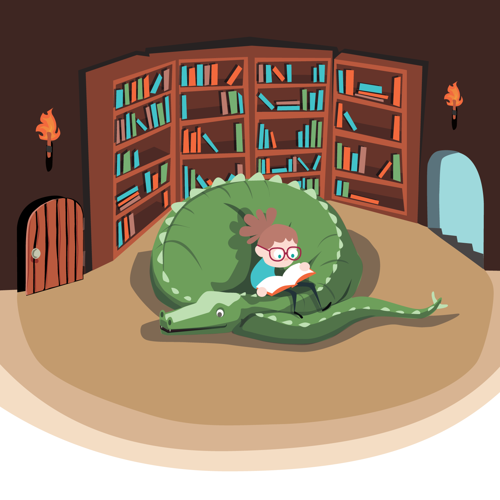

“ In a post-literate era, background knowledge separates a high-quality designer from automated prompting.
Nicole reads voraciously to uncover the human context behind the design. ”
The Reading Behind the Design
AI gives you content. But does it give you good judgment?
245
books. seven years. one habit.
Learning Science & Design
The science of how people actually learn.


Show more Show less


RESULT: I design for cognitive load, retrieval, and intrinsic motivation—not just points and badges.
Disability, Neurodiversity & Access
The social model of disability, in practice.


Show more Show less


RESULT: Accessibility is a constraint from the first sketch, not a compliance pass at the end.
Trauma & The Learning Brain
Designing for safety, pacing, and trust.


Show more Show less


RESULT: I build in pause, predictability, and low-stakes failure.
Gender & Identity
Identity as a design constraint.


Show more Show less


RESULT: I design with inclusive representation and psychological safety in mind.
Systems Thinking & Critical Analysis
Looking at the system, not just the symptom.


Show more Show less


RESULT: I ask who a design excludes before I ask what it includes.
Narrative & Fiction
Narrative structure, empathy, and human motivation.


Show more Show less


RESULT: My scenarios read like real human stories, not disconnected quizzes.
In an age of summaries,
a good designer reads the sources.
Every book on this page was read start to finish, building the deep context: psychology, pedagogy, systems. True design judgment isn’t generated by a machine; it’s built through practice. It’s the ability to hold complexity, spot invisible context, and know exactly how to scope, sequence, and solve.